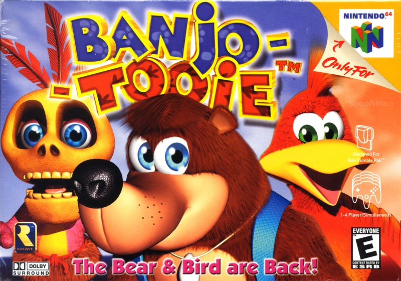

Banjo Tooie

Banjo-Tooie, la secuela de Banjo-Kazooie, mantiene la diversión y el encanto del original. Con un mundo más grande y una jugabilidad mejorada, ofrece una experiencia aún más emocionante. Los personajes carismáticos, los desafíos ingeniosos y el sentido del humor característico hacen de este juego una continuación imprescindible para los fanáticos de la serie. La colaboración entre Banjo y Kazooie se vuelve más profunda, y la expansión del mundo garantiza muchas horas de diversión.